វត្ថុបំណង
- កំណត់ភាពឆ្លុះនិងរូបឆ្លុះធៀបនឹងចំណុច
- សង់រូបឆ្លុះធៀបនឹងចំណុច
- កំណត់ភាពឆ្លុះនិងរូបឆ្លុះធៀបនឹងបន្ទាត់
- កំណត់អ័ក្សឆ្លុះនៃរូបធរណីមាត្រ
- សង់រូបឆ្លុះធៀបនឹងបន្ទាត់ ។
1. ភាពឆ្លុះធៀបនឹងចំណុច
1.1. ភាពឆ្លុះធៀបនឹងចំណុច
គេមានចំណុចនឹង \(\displaystyle O\) មួយនិងចំណុច \(\displaystyle M\) មួយនៅក្នុងប្លង់ ។ គេគូសអង្កត់ \(\displaystyle MO\) រួចបន្លាយខាង \(\displaystyle O\) ឱ្យបាន \(\displaystyle OM' = OM\) ។ គេបាន \(\displaystyle O\) ជាចំណុចកណ្តាលនៃ \(\displaystyle MM'\) ហើយគេថាចំណុច \(\displaystyle M'\) ឆ្លុះនឹង \(\displaystyle M\) ធៀបនឹងចំណុច \(\displaystyle O\) ។ ចំណុច \(\displaystyle O\) ហៅថា ផ្ចិតឆ្លុះ ។ ចំណុចឆ្លុះនៃចំណុច \(\displaystyle O\) គឺចំណុច \(\displaystyle O\) ខ្លួនឯង ។
ជាទូទៅ ចំណុច \(\displaystyle M\) ឆ្លុះ \(\displaystyle M'\) ធៀបនឹងចំណុច \(\displaystyle O\) មួយកាលណា \(\displaystyle O\) ជាចំណុចកណ្តាលនៃអង្កត់ \(\displaystyle MM'\) ។
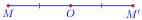
▶ មើលរូបមានចលនា៖ ចំណុចឆ្លុះធៀបនឹងចំណុច
1.2. ការសង់ចំណុច \(\displaystyle M'\) ជាចំណុចឆ្លុះនៃ \(\displaystyle M\) ធៀបនឹង \(\displaystyle O\)
1.2.1. ការប្រើប្រាស់បន្ទាត់
គេគូសកន្លះបន្ទាត់ \(\displaystyle MO\) រួចគេដៅចំណុច \(\displaystyle M'\) ដោយឱ្យ \(\displaystyle OM' = MO\) ។
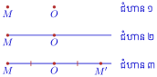
▶ មើលរូបមានចលនា៖ សង់ M′ ដោយបន្ទាត់ក្រិត
1.2.2. ការប្រើដែកឈាននិងបន្ទាត់
គេគូសកន្លះបន្ទាត់ \(\displaystyle MO\) និងកន្លះរង្វង់ផ្ចិត \(\displaystyle O\) កាំ \(\displaystyle OM\) ។ កន្លះរង្វង់នេះកាត់កន្លះបន្ទាត់ \(\displaystyle MO\) ត្រង់ \(\displaystyle M'\) ។
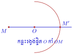
▶ មើលរូបមានចលនា៖ សង់ M′ ដោយដែកឈាន
2. រូបឆ្លុះគ្នាធៀបនឹងចំណុច
គេថា \(\displaystyle A'\) ជារូបឆ្លុះនៃរូប \(\displaystyle A\) ធៀបនឹងចំណុច \(\displaystyle O\) ឬថារូប \(\displaystyle A\) និង \(\displaystyle A'\) ឆ្លុះគ្នាធៀបចំណុច \(\displaystyle O\) ។
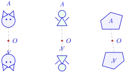
▶ មើលរូបមានចលនា៖ រូបឆ្លុះគ្នាធៀបនឹងចំណុច
2.1. បន្ទាត់ឆ្លុះគ្នាធៀបនឹងចំណុច
រូបឆ្លុះនៃបន្ទាត់ \(\displaystyle d\) ធៀបចំណុច \(\displaystyle O\) (\(\displaystyle O \notin d\)) គឺបន្ទាត់ \(\displaystyle d'\) ស្របបន្ទាត់ \(\displaystyle d\) ។
បើចំណុច \(\displaystyle O\) ឋិតនៅលើបន្ទាត់ \(\displaystyle d\) នោះបន្ទាត់ \(\displaystyle d'\) ត្រួតស៊ីលើបន្ទាត់ \(\displaystyle d\) ។
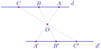
▶ មើលរូបមានចលនា៖ រូបឆ្លុះធៀបនឹងចំណុច
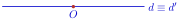
បើចំណុច \(\displaystyle A, B\) និង \(\displaystyle C\) រត់ត្រង់ជួរ នោះចំណុចឆ្លុះវា \(\displaystyle A', B'\) និង \(\displaystyle C'\) ក៏រត់ត្រង់ជួរដែរ ។
2.2. អង្កត់ឆ្លុះគ្នាធៀបនឹងចំណុច
គេមានចំណុច \(\displaystyle A', B', I'\) ជាចំណុចឆ្លុះនៃចំណុច \(\displaystyle A, B, I\) ធៀបចំណុច \(\displaystyle O\) ។ បើអង្កត់ \(\displaystyle A'B'\) ឆ្លុះអង្កត់ \(\displaystyle AB\) ធៀបចំណុច \(\displaystyle O\) នោះ ៖
បើ \(\displaystyle I\) ជាចំណុចកណ្តាលនៃអង្កត់ \(\displaystyle AB\) នោះ \(\displaystyle I'\) ជាចំណុចកណ្តាលនៃអង្កត់ \(\displaystyle A'B'\) ។
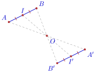
▶ មើលរូបមានចលនា៖ អង្កត់ឆ្លុះគ្នាធៀបនឹងចំណុច
2.3. មុំឆ្លុះគ្នាធៀបនឹងចំណុច
រូបឆ្លុះនៃមុំមួយធៀបនឹងចំណុចមួយ ជារូបមួយទៀតដែលមានមុំប៉ុនគ្នា ៖
រូបឆ្លុះនៃមុំកែងមួយធៀបនឹងចំណុចមួយ ជារូបមួយទៀតដែលមានមុំកែងដូចគ្នា ។
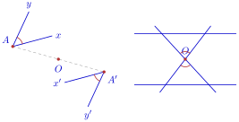
▶ មើលរូបមានចលនា៖ មុំឆ្លុះគ្នាធៀបនឹងចំណុច
ជាទូទៅ
- រូបពីរឆ្លុះគ្នាធៀបនឹងចំណុចមួយជារូបប៉ុនគ្នា ។
- បន្ទាត់ពីរឆ្លុះគ្នាធៀបនឹងចំណុចមួយជាបន្ទាត់ស្របគ្នា (បើបន្ទាត់មិនកាត់តាមផ្ចិតឆ្លុះ) ។
- អង្កត់ពីរឆ្លុះគ្នាធៀបនឹងចំណុចមួយជាអង្កត់ស្របគ្នានិងប៉ុនគ្នា ។
- មុំពីរឆ្លុះគ្នាធៀបនឹងចំណុចមួយជាមុំប៉ុនគ្នា ។
លំហាត់គំរូ ៖ សង់ត្រីកោណ \(\displaystyle EFC\) ឆ្លុះនឹងត្រីកោណ \(\displaystyle ABC\) ធៀបនឹងចំណុច \(\displaystyle C\) ។ បញ្ជាក់មុំដែលមានរង្វាស់ស្មើគ្នា ។
ដំណោះស្រាយ
សង់ត្រីកោណ \(\displaystyle EFC\) ឆ្លុះនឹងត្រីកោណ \(\displaystyle ABC\) ធៀបនឹងចំណុច \(\displaystyle C\) ៖
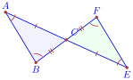
▶ មើលរូបមានចលនា៖ សង់រូបឆ្លុះធៀបនឹងចំណុច
ដោយ \(\displaystyle E\) ឆ្លុះ \(\displaystyle A\) ធៀបនឹង \(\displaystyle C\) នោះបន្លាយអង្កត់ \(\displaystyle AC\) គេបាន \(\displaystyle CE = CA\) ។
ដោយ \(\displaystyle F\) ឆ្លុះ \(\displaystyle B\) ធៀបនឹង \(\displaystyle C\) នោះបន្លាយ \(\displaystyle BC\) គេបាន \(\displaystyle CF = CB\) ។
ភ្ជាប់ \(\displaystyle EF\) គេបាន \(\displaystyle \Delta EFC = \Delta ABC\) ។
ដូច្នេះ ត្រីកោណ \(\displaystyle EFC\) ជារូបឆ្លុះនៃត្រីកោណ \(\displaystyle ABC\) ធៀបនឹងចំណុច \(\displaystyle C\) ។
មុំដែលមានរង្វាស់ស្មើគ្នាគឺ ៖
ប្រតិបត្តិ ៖ គូសរូបខាងស្តាំនេះឡើងវិញ រួចសង់រូបឆ្លុះ \(\displaystyle T'\) នៃត្រីកោណ \(\displaystyle T\) ធៀបនឹងចំណុច \(\displaystyle O\) ។ តើគេអាចថាយ៉ាងណាចំពោះត្រីកោណ \(\displaystyle T'\) ? ហេតុអ្វី?
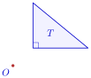
▶ មើលរូបមានចលនា៖ សង់រូបឆ្លុះធៀបនឹងចំណុច
ចម្លើយ
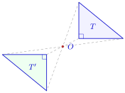
គេបានត្រីកោណ \(\displaystyle T'\) ឆ្លុះនៃត្រីកោណ \(\displaystyle T\) ធៀបនឹងចំណុច \(\displaystyle O\) ៖
- ត្រីកោណ \(\displaystyle T'\) ជាត្រីកោណកែងដូចត្រីកោណ \(\displaystyle T\) ដែរ ។
- ត្រីកោណ \(\displaystyle T'\) ប៉ុនត្រីកោណ \(\displaystyle T\) (\(\displaystyle T' = T\)) ។
មូលហេតុ ៖ ពីព្រោះរូបពីរឆ្លុះគ្នាធៀបនឹងចំណុចមួយ ជារូបប៉ុនគ្នា ហើយមុំកែងឆ្លុះធៀបនឹងចំណុចមួយក៏ជាមុំកែងដែរ ។
3. ភាពឆ្លុះធៀបនឹងបន្ទាត់
3.1. ចំណុចឆ្លុះធៀបនឹងបន្ទាត់
ឧទាហរណ៍ ៖ គេយកក្រដាសមួយសន្លឹកបត់ជាពីរ ហើយយកខ្មៅដៃមកចុចលើក្រដាសនោះត្រង់ចំណុចមួយតាងដោយ \(\displaystyle A\) រួចឱ្យឆ្លុះទៅម្ខាងទៀតតាងដោយចំណុច \(\displaystyle A'\) ។ គេលាតក្រដាសនោះវិញ គេសង្កេតឃើញថាចំណុច \(\displaystyle A'\) ឆ្លុះចំណុច \(\displaystyle A\) តាមស្នាមបត់តាងដោយបន្ទាត់ \(\displaystyle d\) ។
គេថាចំណុច \(\displaystyle A'\) ឆ្លុះនឹងចំណុច \(\displaystyle A\) ធៀបនឹងបន្ទាត់ \(\displaystyle d\) ។
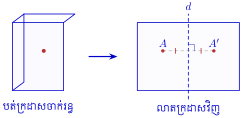
▶ មើលរូបមានចលនា៖ បត់ក្រដាស A និង A′
ជាទូទៅ ចំណុច \(\displaystyle A'\) ឆ្លុះចំណុច \(\displaystyle A\) ធៀបនឹងបន្ទាត់ \(\displaystyle d\) កាលណាបន្ទាត់ \(\displaystyle d\) កែងនឹងអង្កត់ \(\displaystyle AA'\) ត្រង់ចំណុចកណ្តាល \(\displaystyle O\) ។ បន្ទាត់ \(\displaystyle d\) ហៅថា មេដ្យាទ័រនៃអង្កត់ \(\displaystyle AA'\) ។
សម្គាល់ ៖ បើចំណុច \(\displaystyle M \in d\) នោះចំណុចឆ្លុះ \(\displaystyle M'\) ត្រួតលើ \(\displaystyle M\) ។
3.2. ការសង់ចំណុច \(\displaystyle A'\) ឆ្លុះចំណុច \(\displaystyle A\) ធៀបនឹងបន្ទាត់ \(\displaystyle d\)
ឧទាហរណ៍ ៖ គេមានចំណុច \(\displaystyle A\) មួយនិងបន្ទាត់ \(\displaystyle d\) មួយ ដែល \(\displaystyle A \notin d\) នៅក្នុងប្លង់ \(\displaystyle P\) ។ គេសង់ចំណុច \(\displaystyle A'\) ឆ្លុះនឹងចំណុច \(\displaystyle A\) ធៀបនឹងបន្ទាត់ \(\displaystyle d\) ។
តាមចំណុច \(\displaystyle A\) គេគូសអង្កត់ \(\displaystyle AA'\) កែងនឹងបន្ទាត់ \(\displaystyle d\) ត្រង់ \(\displaystyle O\) ដែល \(\displaystyle OA = OA'\) ។ គេបានចំណុច \(\displaystyle A'\) ឆ្លុះនឹងចំណុច \(\displaystyle A\) ធៀបនឹងបន្ទាត់ \(\displaystyle d\) ។
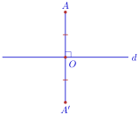
▶ មើលរូបមានចលនា៖ សង់ចំណុចឆ្លុះធៀបនឹងបន្ទាត់
4. រូបឆ្លុះគ្នាធៀបនឹងបន្ទាត់
ឧទាហរណ៍ ៖ គេថា \(\displaystyle A'\) ជារូបឆ្លុះនៃរូប \(\displaystyle A\) ធៀបនឹងបន្ទាត់ \(\displaystyle \Delta\) ឬ រូប \(\displaystyle A\) និង \(\displaystyle A'\) ឆ្លុះគ្នាធៀបនឹងបន្ទាត់ \(\displaystyle \Delta\) ។
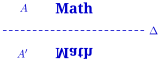
▶ មើលរូបមានចលនា៖ រូបឆ្លុះគ្នាធៀបនឹងបន្ទាត់
រូបឆ្លុះនៃអង្កត់មួយធៀបនឹងបន្ទាត់មួយ ជាអង្កត់ប៉ុនគ្នា ៖
\[A'B' = AB, \quad E'F' = EF\]គេថាអង្កត់ \(\displaystyle A'B'\) និង \(\displaystyle AB\) ឆ្លុះគ្នាធៀបនឹងបន្ទាត់ \(\displaystyle \Delta\) ហើយ \(\displaystyle E'F'\) និង \(\displaystyle EF\) ឆ្លុះគ្នាធៀបនឹងបន្ទាត់ \(\displaystyle \Delta\) ដែរ ។
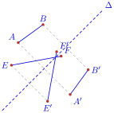
▶ មើលរូបមានចលនា៖ អង្កត់ឆ្លុះគ្នាធៀបនឹងបន្ទាត់
រូបឆ្លុះនៃរង្វង់ធៀបនឹងបន្ទាត់មួយ ជារង្វង់មួយទៀតដែលមានកាំប៉ុនគ្នា ៖
\[A'B' = AB\]គេថារង្វង់ផ្ចិត \(\displaystyle A\) និង \(\displaystyle A'\) ឆ្លុះគ្នាធៀបនឹងបន្ទាត់ \(\displaystyle \Delta\) ។
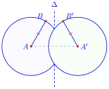
រូបឆ្លុះនៃមុំធៀបនឹងបន្ទាត់មួយ ជាមុំមួយទៀតដែលមានមុំប៉ុនគ្នា ៖
\[\angle A = \angle A', \quad \angle E_1 = \angle E_2\]គេថាមុំ \(\displaystyle \angle A\) និង \(\displaystyle \angle A'\) ឆ្លុះគ្នាធៀបនឹងបន្ទាត់ \(\displaystyle \Delta\) ។
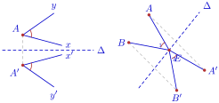
▶ មើលរូបមានចលនា៖ មុំឆ្លុះគ្នាធៀបនឹងបន្ទាត់
ជាទូទៅ
- រូបពីរឆ្លុះគ្នាធៀបនឹងបន្ទាត់មួយជារូបប៉ុនគ្នា
- រង្វង់ពីរឆ្លុះគ្នាធៀបនឹងបន្ទាត់មួយជារង្វង់ប៉ុនគ្នា
- អង្កត់ពីរឆ្លុះគ្នាធៀបនឹងបន្ទាត់មួយជាអង្កត់ប៉ុនគ្នា
- មុំពីរឆ្លុះគ្នាធៀបនឹងបន្ទាត់មួយជាមុំប៉ុនគ្នា ។
លំហាត់គំរូ ៖
- ក. គូសរូបខាងស្តាំនេះឡើងវិញ រួចសង់រូបឆ្លុះនៃរូបនេះធៀបនឹងបន្ទាត់ \(\displaystyle d\) ។ (គេយក \(\displaystyle F', O', R', C', E'\) ជាចំណុចឆ្លុះរៀងគ្នានៃចំណុច \(\displaystyle F, O, R, C, E\)) ។
- ខ. វាស់ \(\displaystyle OR\) និង \(\displaystyle O'R'\), \(\displaystyle RE\) និង \(\displaystyle R'E'\), \(\displaystyle OF\) និង \(\displaystyle O'F'\) រួចសន្និដ្ឋាន ។
- គ. \(\displaystyle C\) ជាចំណុចកណ្តាលនៃអង្កត់ \(\displaystyle RE\) ។ តើគេអាចថាយ៉ាងណាចំពោះចំណុច \(\displaystyle C'\) ?
- ឃ. ចំណុច \(\displaystyle O, C, F\) រត់ត្រង់គ្នា ។ តើគេអាចថាយ៉ាងណាចំពោះចំណុច \(\displaystyle O', C', F'\) ?
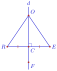
▶ មើលរូបមានចលនា៖ សង់រូបឆ្លុះធៀបនឹងបន្ទាត់
ដំណោះស្រាយ
- ក.
គូសរូបឡើងវិញ រួចសង់រូបឆ្លុះ ៖
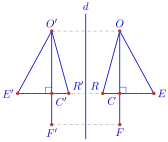
- ខ.
តាមការវាស់ប្រវែង គេបាន ៖
\[OR = O'R', \quad RE = R'E', \quad OF = O'F'\] - គ. ដោយ \(\displaystyle C\) ជាចំណុចកណ្តាលនៃ \(\displaystyle [RE]\) នោះចំណុចឆ្លុះ \(\displaystyle C'\) ជាចំណុចកណ្តាលនៃអង្កត់ \(\displaystyle R'E'\) ។
- ឃ. ដោយចំណុច \(\displaystyle O, C, F\) រត់ត្រង់ជួរ នោះចំណុចឆ្លុះ \(\displaystyle O', C', F'\) ធៀបនឹងបន្ទាត់ \(\displaystyle d\) ក៏រត់ត្រង់ជួរដែរ ។
ប្រតិបត្តិ ៖ រង្វង់ពីរមានផ្ចិតរៀងគ្នា \(\displaystyle O\) និង \(\displaystyle O'\) ប្រសព្វគ្នាត្រង់ពីរចំណុច \(\displaystyle A\) និង \(\displaystyle B\) ។
- ក. បង្ហាញថាបន្ទាត់ \(\displaystyle OO'\) ជាមេដ្យាទ័រនៃអង្កត់ធ្នូរួម \(\displaystyle AB\) ។
- ខ. ប្រៀបធៀប \(\displaystyle \angle OAB\) និង \(\displaystyle \angle OBA\) រួច \(\displaystyle \angle O'AB\) និង \(\displaystyle \angle O'BA\) ។
- គ. ប្រៀបធៀប \(\displaystyle \angle OAO'\) និង \(\displaystyle \angle OBO'\) ។
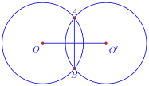
ចម្លើយ
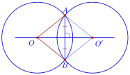
- ក. បង្ហាញថាបន្ទាត់ \(\displaystyle OO'\) ជាមេដ្យាទ័រនៃអង្កត់ធ្នូរួម \(\displaystyle AB\) ៖ គេមាន \(\displaystyle A\) និង \(\displaystyle B\) ឋិតនៅលើរង្វង់ផ្ចិត \(\displaystyle O\) នាំឱ្យ \(\displaystyle OA = OB\) (កាំនៃរង្វង់ \(\displaystyle O\)) នោះ \(\displaystyle O\) ឋិតនៅលើមេដ្យាទ័រនៃ \(\displaystyle [AB]\) ។ គេមាន \(\displaystyle A\) និង \(\displaystyle B\) ឋិតនៅលើរង្វង់ផ្ចិត \(\displaystyle O'\) នាំឱ្យ \(\displaystyle O'A = O'B\) (កាំនៃរង្វង់ \(\displaystyle O'\)) នោះ \(\displaystyle O'\) ឋិតនៅលើមេដ្យាទ័រនៃ \(\displaystyle [AB]\) ។ ដូចនេះ បន្ទាត់ \(\displaystyle OO'\) កាត់តាមចំណុចពីរ \(\displaystyle O\) និង \(\displaystyle O'\) ដែលស្មើចម្ងាយពីចុងទាំងសងខាងនៃ \(\displaystyle [AB]\) នាំឱ្យបន្ទាត់ \(\displaystyle OO'\) ជាមេដ្យាទ័រនៃអង្កត់ធ្នូរួម \(\displaystyle AB\) ។
- ខ. ប្រៀបធៀបមុំ ៖ ក្នុង \(\displaystyle \Delta OAB\) មាន \(\displaystyle OA = OB\) នាំឱ្យ \(\displaystyle \Delta OAB\) ជាត្រីកោណសមបាតកំពូល \(\displaystyle O\) គេបាន \(\displaystyle \angle OAB = \angle OBA\) ។ ក្នុង \(\displaystyle \Delta O'AB\) មាន \(\displaystyle O'A = O'B\) នាំឱ្យ \(\displaystyle \Delta O'AB\) ជាត្រីកោណសមបាតកំពូល \(\displaystyle O'\) គេបាន \(\displaystyle \angle O'AB = \angle O'BA\) ។
- គ.
ប្រៀបធៀប \(\displaystyle \angle OAO'\) និង \(\displaystyle \angle OBO'\) ៖ គេបាន ៖
\[\begin{aligned} \angle OAO' &= \angle OAB + \angle O'AB \\ \angle OBO' &= \angle OBA + \angle O'BA \end{aligned}\]ដោយ \(\displaystyle \angle OAB = \angle OBA\) និង \(\displaystyle \angle O'AB = \angle O'BA\) នោះ ៖
\[\angle OAO' = \angle OBO'\]
5. អ័ក្សឆ្លុះនៃរូបធរណីមាត្រប្លង់
5.1. រូបមានអ័ក្សឆ្លុះ
ឧទាហរណ៍ 1 ៖ ពិនិត្យមើលរូបខាងស្តាំនេះ ។ គេសង្កេតឃើញថា រូបនីមួយៗមានផ្នែកខាងឆ្វេងជារូបចម្លងនៃផ្នែកខាងស្តាំ ។ គេថាផ្នែកខាងស្តាំនិងខាងឆ្វេងឆ្លុះគ្នាធៀបនឹងបន្ទាត់មួយ ។
បើគេបត់រូបនីមួយៗនេះតាមផ្លូវគូសដាច់ៗ គេឃើញថាផ្នែកម្ខាងត្រួតស៊ីលើផ្នែកម្ខាងទៀត ។ បន្ទាត់ត្រង់ដាច់នេះ ហៅថា អ័ក្សឆ្លុះ នៃរូបនីមួយៗ ។ រូបនីមួយៗនេះហៅថា រូបមានអ័ក្សឆ្លុះ ។
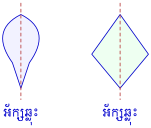
ឧទាហរណ៍ 2 ៖ គូសអ័ក្សឆ្លុះទាំងអស់នៃរូបនីមួយៗខាងក្រោម បើអាចមាន ៖
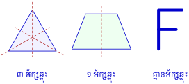
ត្រីកោណសម័ង្សមានអ័ក្សឆ្លុះបី ចតុកោណព្នាយសមបាតមានអ័ក្សឆ្លុះមួយ និងអក្សរ F គ្មានអ័ក្សឆ្លុះទេ ។
ជាទូទៅ រូបមានអ័ក្សឆ្លុះ គឺជារូបដែលផ្តុំដោយផ្នែកពីរឆ្លុះគ្នាធៀបនឹងបន្ទាត់មួយ \(\displaystyle d\) ហើយបន្ទាត់នោះជាអ័ក្សឆ្លុះនៃរូបនោះ ។
លំហាត់គំរូ ៖ នេះជាទង់ជាតិនៃប្រទេសចាម៉ីកា (Jamaica) ។ តើទង់ជាតិនៃប្រទេសចាម៉ីកាមានអ័ក្សឆ្លុះប៉ុន្មាន?
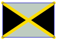
ដំណោះស្រាយ
ទង់ជាតិនៃប្រទេសចាម៉ីកាមានអ័ក្សឆ្លុះ 2 (អ័ក្សឆ្លុះផ្ដេកមួយ និងអ័ក្សឆ្លុះបញ្ឈរមួយ) ។
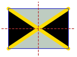
ប្រតិបត្តិ ៖ ដៅចំណុចដែលមានកូអរដោនេដូចខាងក្រោមនេះនៅលើក្រដាសការ៉ូ រួចគូសភ្ជាប់ចំណុចទាំងនេះតាមលំដាប់ ។ រកចំនួនអ័ក្សឆ្លុះនៃរូបដែលគូសបាន ។
- ក. \(\displaystyle (0, 0), (-3, 0), (-3, 1), (-1, 1), (-1, 3), (0, 3), (0, 0)\)
- ខ. \(\displaystyle (2, 3), (6, 3), (6, 5), (2, 5), (2, 3)\) ។
ចម្លើយ
- ក.
ដៅចំណុច \(\displaystyle (0, 0), (-3, 0), (-3, 1), (-1, 1), (-1, 3), (0, 3), (0, 0)\) រួចភ្ជាប់តាមលំដាប់ ៖
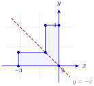
គេបានរូបពហុកោណដែលទទួលបានមានអ័ក្សឆ្លុះចំនួន 1 គឺបន្ទាត់ពុះ \(\displaystyle y = -x\) ។
- ខ.
ដៅចំណុច \(\displaystyle (2, 3), (6, 3), (6, 5), (2, 5), (2, 3)\) រួចភ្ជាប់តាមលំដាប់ ៖
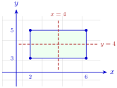
រូបដែលទទួលបានជាចតុកោណកែងដែលមានបណ្តោយ \(\displaystyle 4\) និងទទឹង \(\displaystyle 2\) ។ ដូចនេះ រូបនេះមានអ័ក្សឆ្លុះចំនួន 2 គឺបន្ទាត់ \(\displaystyle x = 4\) និងបន្ទាត់ \(\displaystyle y = 4\) ។
លំហាត់
ក្នុងចំណោមរូបខាងក្រោម តើរូបណាខ្លះមិនមានអ័ក្សឆ្លុះ?
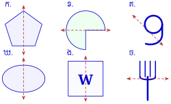
មើលដំណោះស្រាយ
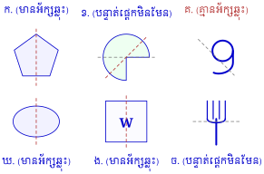
ពិនិត្យមើលរូបនីមួយៗ ៖
- ក. បញ្ចកោណនិយ័ត ៖ បន្ទាត់បញ្ឈរជាអ័ក្សឆ្លុះ (មានអ័ក្សឆ្លុះ) ។
- ខ. បីភាគបួននៃរង្វង់ ៖ បន្ទាត់ផ្ដេកដាច់ៗដែលបានគូស មិនមែនជាអ័ក្សឆ្លុះទេ (ព្រោះផ្នែកខាងលើនិងខាងក្រោមមិនត្រួតស៊ីគ្នាទេ) ។
- គ. លេខ 9 ៖ គ្មានអ័ក្សឆ្លុះទេ (ទោះបីបត់តាមបន្ទាត់ទ្រេត ក៏ផ្នែកទាំងពីរមិនត្រួតស៊ីគ្នាដែរ) ។
- ឃ. រាងពងក្រពើ ៖ បន្ទាត់បញ្ឈរជាអ័ក្សឆ្លុះ (មានអ័ក្សឆ្លុះ) ។
- ង. ការ៉េមានអក្សរ W ៖ បន្ទាត់បញ្ឈរជាអ័ក្សឆ្លុះ (មានអ័ក្សឆ្លុះ) ។
- ច. សម ៖ បន្ទាត់ផ្ដេកដែលបានគូស មិនមែនជាអ័ក្សឆ្លុះទេ (ព្រោះចុងធ្មេញសមនិងដងសមមិនឆ្លុះគ្នាទេ) ។
ដូច្នេះ រូបដែលគ្មានអ័ក្សឆ្លុះគឺ រូប គ (លេខ 9) ហើយចំពោះរូប ខ និងរូប ច បន្ទាត់ដាច់ៗដែលបានគូសមិនមែនជាអ័ក្សឆ្លុះទេ ។
សង់ចំណុច \(\displaystyle A', B'\) និង \(\displaystyle C'\) ឆ្លុះចំណុច \(\displaystyle A, B\) និង \(\displaystyle C\) ធៀបនឹងចំណុច \(\displaystyle O\) ។
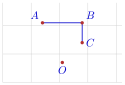
មើលដំណោះស្រាយ
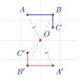
របៀបសង់ ៖
- គូសបន្ទាត់ \(\displaystyle AO\) រួចបន្លាយខាង \(\displaystyle O\) ឱ្យបាន \(\displaystyle OA' = OA\) គេបានចំណុច \(\displaystyle A'\) ឆ្លុះ \(\displaystyle A\) ធៀបនឹង \(\displaystyle O\) ។
- គូសបន្ទាត់ \(\displaystyle BO\) រួចបន្លាយខាង \(\displaystyle O\) ឱ្យបាន \(\displaystyle OB' = OB\) គេបានចំណុច \(\displaystyle B'\) ឆ្លុះ \(\displaystyle B\) ធៀបនឹង \(\displaystyle O\) ។
- គូសបន្ទាត់ \(\displaystyle CO\) រួចបន្លាយខាង \(\displaystyle O\) ឱ្យបាន \(\displaystyle OC' = OC\) គេបានចំណុច \(\displaystyle C'\) ឆ្លុះ \(\displaystyle C\) ធៀបនឹង \(\displaystyle O\) ។
បើផ្ចិត \(\displaystyle O(0, 0)\) ជាគល់កូអរដោនេ នោះ ៖
\[\begin{aligned} A(-1, 2) &\implies A'(1, -2) \\ B(1, 2) &\implies B'(-1, -2) \\ C(1, 1) &\implies C'(-1, -1) \end{aligned}\]សង់ចំណុច \(\displaystyle A', B'\) និង \(\displaystyle C'\) ឆ្លុះចំណុច \(\displaystyle A, B\) និង \(\displaystyle C\) ធៀបនឹងចំណុច \(\displaystyle O\) ។ ប្រៀបធៀបមុំ \(\displaystyle \angle BAC\) និង \(\displaystyle \angle B'A'C'\) ។
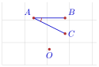
មើលដំណោះស្រាយ
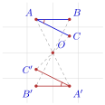
តាមលក្ខណៈរូបឆ្លុះធៀបនឹងចំណុច ៖
- ចំណុច \(\displaystyle A', B', C'\) ជាចំណុចឆ្លុះរៀងគ្នានៃ \(\displaystyle A, B, C\) ធៀបនឹងចំណុច \(\displaystyle O\) គេបានអង្កត់ \(\displaystyle A'B' = AB\) និង \(\displaystyle A'C' = AC\) ។
- មុំ \(\displaystyle \angle B'A'C'\) ជារូបឆ្លុះនៃមុំ \(\displaystyle \angle BAC\) ធៀបនឹងចំណុច \(\displaystyle O\) ។
ដោយរូបឆ្លុះនៃមុំមួយធៀបនឹងចំណុចមួយ ជាមុំមួយទៀតដែលមានរង្វាស់ប៉ុនគ្នា នោះ ៖
\[\angle B'A'C' = \angle BAC\]សង់ត្រីកោណ \(\displaystyle ABC\) និងមេដ្យាន \(\displaystyle [AI]\) ។ សង់ចំណុច \(\displaystyle D, H\) ជាចំណុចឆ្លុះនៃ \(\displaystyle B, I\) ធៀបចំណុច \(\displaystyle C\) ។ តើគេអាចថា \(\displaystyle [AH]\) យ៉ាងណាចំពោះត្រីកោណ \(\displaystyle ADC\) ? ហេតុអ្វី?
មើលដំណោះស្រាយ
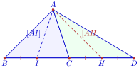
គេបាន ៖
- \(\displaystyle [AI]\) ជាមេដ្យាននៃត្រីកោណ \(\displaystyle ABC\) នាំឱ្យ \(\displaystyle I\) ជាចំណុចកណ្តាលនៃ \(\displaystyle [BC]\) នោះ \(\displaystyle CI = \frac{1}{2} BC\) ។
- \(\displaystyle D\) ជាចំណុចឆ្លុះនៃ \(\displaystyle B\) ធៀបនឹង \(\displaystyle C\) នាំឱ្យ \(\displaystyle C\) ជាចំណុចកណ្តាលនៃ \(\displaystyle [BD]\) នោះ \(\displaystyle CD = CB\) ។
- \(\displaystyle H\) ជាចំណុចឆ្លុះនៃ \(\displaystyle I\) ធៀបនឹង \(\displaystyle C\) នាំឱ្យ \(\displaystyle C\) ជាចំណុចកណ្តាលនៃ \(\displaystyle [IH]\) នោះ \(\displaystyle CH = CI = \frac{1}{2} BC = \frac{1}{2} CD\) ។
ដោយ \(\displaystyle CH = \frac{1}{2} CD\) នាំឱ្យ \(\displaystyle H\) ជាចំណុចកណ្តាលនៃជ្រុង \(\displaystyle [CD]\) ក្នុងត្រីកោណ \(\displaystyle ADC\) ។
ដូចនេះ អង្កត់ \(\displaystyle [AH]\) គឺជា មេដ្យាន នៃត្រីកោណ \(\displaystyle ADC\) គូសចេញពីកំពូល \(\displaystyle A\) ទៅកាន់ជ្រុង \(\displaystyle [CD]\) ។
សង់ត្រីកោណសមបាត \(\displaystyle ABC\) កំពូល \(\displaystyle A\) ។ សង់ចំណុច \(\displaystyle D\) ជាចំណុចឆ្លុះនៃ \(\displaystyle C\) ធៀបចំណុច \(\displaystyle A\) ។ តើគេអាចថាយ៉ាងណាចំពោះត្រីកោណ \(\displaystyle ABD\) ? ហេតុអ្វី?
មើលដំណោះស្រាយ
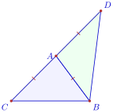
គេមាន ៖
\(\displaystyle \Delta ABC\) ជាត្រីកោណសមបាតកំពូល \(\displaystyle A\) នាំឱ្យ ៖
\[AB = AC\]\(\displaystyle D\) ជាចំណុចឆ្លុះនៃ \(\displaystyle C\) ធៀបនឹងចំណុច \(\displaystyle A\) នាំឱ្យ \(\displaystyle A\) ជាចំណុចកណ្តាលនៃអង្កត់ \(\displaystyle [CD]\) នោះ ៖
\[AD = AC\]
តាមទំនាក់ទំនងទាំងពីរ គេទាញបាន ៖
\[AB = AD\]ដូចនេះ ត្រីកោណ \(\displaystyle ABD\) គឺជា ត្រីកោណសមបាត មានកំពូល \(\displaystyle A\) (ព្រោះ \(\displaystyle AB = AD\)) ។
សម្គាល់ ៖ ដោយ \(\displaystyle A\) ជាចំណុចកណ្តាលនៃ \(\displaystyle [CD]\) ហើយ \(\displaystyle AB = \frac{1}{2} CD\) នោះមេដ្យាន \(\displaystyle [BA]\) ស្មើពាក់កណ្តាលជ្រុងឈម នាំឱ្យ \(\displaystyle \Delta BCD\) ជាត្រីកោណកែងត្រង់ \(\displaystyle B\) (\(\displaystyle \angle CBD = 90^\circ\)) ។
សង់ចំណុច \(\displaystyle A', B'\) និង \(\displaystyle C'\) ឆ្លុះចំណុច \(\displaystyle A, B\) និង \(\displaystyle C\) ធៀបបន្ទាត់ \(\displaystyle d\) ។
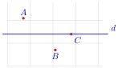
មើលដំណោះស្រាយ
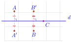
របៀបសង់ ៖
- តាមចំណុច \(\displaystyle A\) គូសបន្ទាត់កែងនឹងបន្ទាត់ \(\displaystyle d\) ត្រង់ \(\displaystyle H_A\) រួចបន្លាយឱ្យបាន \(\displaystyle H_A A' = H_A A\) ។ ដោយ \(\displaystyle A\) នៅខាងលើបន្ទាត់ \(\displaystyle d\) ចម្ងាយ 1 ការ៉ូ នោះ \(\displaystyle A'\) នៅខាងក្រោមបន្ទាត់ \(\displaystyle d\) ចម្ងាយ 1 ការ៉ូ ។
- តាមចំណុច \(\displaystyle B\) គូសបន្ទាត់កែងនឹងបន្ទាត់ \(\displaystyle d\) ត្រង់ \(\displaystyle H_B\) រួចបន្លាយឱ្យបាន \(\displaystyle H_B B' = H_B B\) ។ ដោយ \(\displaystyle B\) នៅខាងក្រោមបន្ទាត់ \(\displaystyle d\) ចម្ងាយ 1 ការ៉ូ នោះ \(\displaystyle B'\) នៅខាងលើបន្ទាត់ \(\displaystyle d\) ចម្ងាយ 1 ការ៉ូ ។
- ដោយចំណុច \(\displaystyle C\) ឋិតនៅលើបន្ទាត់ \(\displaystyle d\) ស្រាប់ នោះចំណុចឆ្លុះ \(\displaystyle C'\) ត្រួតស៊ីលើចំណុច \(\displaystyle C\) (\(\displaystyle C' \equiv C\)) ។
សង់ \(\displaystyle \Delta A'B'C'\) ឆ្លុះ \(\displaystyle \Delta ABC\) ធៀបបន្ទាត់ \(\displaystyle d\) ។
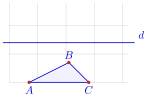
មើលដំណោះស្រាយ
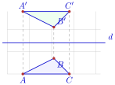
របៀបសង់ ៖
- សង់ចំណុច \(\displaystyle A'\) ឆ្លុះ \(\displaystyle A\) ធៀបនឹង \(\displaystyle d\) ៖ ចំណុច \(\displaystyle A\) នៅខាងក្រោមបន្ទាត់ \(\displaystyle d\) ចម្ងាយ 2 ការ៉ូ នាំឱ្យ \(\displaystyle A'\) នៅខាងលើបន្ទាត់ \(\displaystyle d\) ចម្ងាយ 2 ការ៉ូ ។
- សង់ចំណុច \(\displaystyle B'\) ឆ្លុះ \(\displaystyle B\) ធៀបនឹង \(\displaystyle d\) ៖ ចំណុច \(\displaystyle B\) នៅខាងក្រោមបន្ទាត់ \(\displaystyle d\) ចម្ងាយ 1 ការ៉ូ នាំឱ្យ \(\displaystyle B'\) នៅខាងលើបន្ទាត់ \(\displaystyle d\) ចម្ងាយ 1 ការ៉ូ ។
- សង់ចំណុច \(\displaystyle C'\) ឆ្លុះ \(\displaystyle C\) ធៀបនឹង \(\displaystyle d\) ៖ ចំណុច \(\displaystyle C\) នៅខាងក្រោមបន្ទាត់ \(\displaystyle d\) ចម្ងាយ 2 ការ៉ូ នាំឱ្យ \(\displaystyle C'\) នៅខាងលើបន្ទាត់ \(\displaystyle d\) ចម្ងាយ 2 ការ៉ូ ។
- ភ្ជាប់អង្កត់ \(\displaystyle A'B', B'C'\) និង \(\displaystyle C'A'\) គេបានត្រីកោណ \(\displaystyle A'B'C'\) ឆ្លុះនឹង \(\displaystyle \Delta ABC\) ធៀបនឹងបន្ទាត់ \(\displaystyle d\) ។
គូសអ័ក្សឆ្លុះនៃរូបនីមួយៗខាងក្រោម ៖
- ក. ត្រីកោណសម័ង្ស
- ខ. ចតុកោណកែង
- គ. ឆកោណនិយ័ត ។
មើលដំណោះស្រាយ
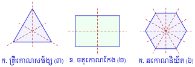
ចំនួនអ័ក្សឆ្លុះនៃរូបនីមួយៗគឺ ៖
- ក. ត្រីកោណសម័ង្ស ៖ មានអ័ក្សឆ្លុះចំនួន 3 (ជាមេដ្យាទ័រនៃជ្រុងទាំងបី ដែលកាត់តាមកំពូលឈមរៀងៗខ្លួន) ។
- ខ. ចតុកោណកែង ៖ មានអ័ក្សឆ្លុះចំនួន 2 (ជាមេដ្យាទ័រនៃជ្រុងឈមទាំងពីរគូ) ។
- គ. ឆកោណនិយ័ត ៖ មានអ័ក្សឆ្លុះចំនួន 6 (3 កាត់តាមកំពូលឈមគ្នា និង 3 ទៀតជាមេដ្យាទ័រនៃជ្រុងឈមគ្នា) ។
ចូរបន្ថែមការ៉េមួយទៅរូបខាងស្តាំ ដើម្បីបានរូបថ្មីមួយដែលមានអ័ក្សឆ្លុះមួយ ។
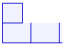
មើលដំណោះស្រាយ
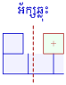
រូបដើមមានការ៉េចំនួន 4 ដែលជួរក្រោមមាន 3 ការ៉ូ និងជួរលើមាន 1 ការ៉ូនៅខាងឆ្វេង ។
ដើម្បីឱ្យរូបថ្មីមានអ័ក្សឆ្លុះមួយ គេត្រូវបន្ថែមការ៉េមួយទៀតនៅជួរលើខាងស្តាំ (លើការ៉ូទី 3 នៃជួរក្រោម) ៖
- រូបថ្មីដែលទទួលបានមានរាងដូចអក្សរ U ឬកូនប្រាសាទ ដែលមានការ៉ូចំនួន 5 ។
- អ័ក្សឆ្លុះគឺជាបន្ទាត់បញ្ឈរកាត់តាមចំកណ្តាលនៃការ៉ូកណ្តាលនៃជួរក្រោម ។
សង់រូបចតុកោណព្នាយ \(\displaystyle A'B'C'D'\) ឆ្លុះ \(\displaystyle ABCD\) ក្នុងករណីដូចខាងក្រោម ៖
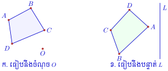
មើលដំណោះស្រាយ
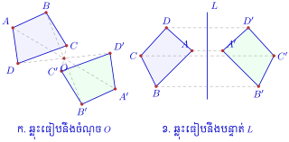
របៀបសង់ ៖
- ក. ឆ្លុះធៀបនឹងចំណុច \(\displaystyle O\) ៖ តាមកំពូលនីមួយៗ \(\displaystyle A, B, C, D\) គូសបន្ទាត់កាត់តាមផ្ចិត \(\displaystyle O\) រួចបន្លាយឱ្យបាន \(\displaystyle OA' = OA, OB' = OB, OC' = OC, OD' = OD\) ។ ភ្ជាប់ចំណុច \(\displaystyle A', B', C', D'\) គេបានចតុកោណព្នាយ \(\displaystyle A'B'C'D'\) ឆ្លុះនឹង \(\displaystyle ABCD\) ធៀបនឹងចំណុច \(\displaystyle O\) ។
- ខ. ឆ្លុះធៀបនឹងបន្ទាត់ \(\displaystyle L\) ៖ តាមកំពូលនីមួយៗ \(\displaystyle A, B, C, D\) គូសបន្ទាត់កែងនឹងបន្ទាត់ \(\displaystyle L\) រួចបន្លាយទៅម្ខាងទៀតនៃបន្ទាត់ \(\displaystyle L\) ឱ្យស្មើនឹងចម្ងាយពីកំពូលនោះមកបន្ទាត់ \(\displaystyle L\) ។ ភ្ជាប់ចំណុច \(\displaystyle A', B', C', D'\) គេបានចតុកោណព្នាយ \(\displaystyle A'B'C'D'\) ឆ្លុះនឹង \(\displaystyle ABCD\) ធៀបនឹងបន្ទាត់ \(\displaystyle L\) ។
គូសរង្វង់ពីរមានកាំប៉ុនគ្នា ។ តើរូបដែលគូសបានមានអ័ក្សឆ្លុះមួយជានិច្ចឬទេ? បើមានតើបន្ទាត់នោះជាអ្វី?
មើលដំណោះស្រាយ
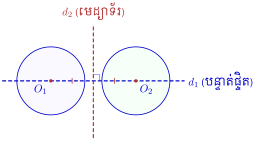
ចម្លើយ ៖ បាទ/ចាស រូបដែលគូសបានមានអ័ក្សឆ្លុះជានិច្ច ។
ការបកស្រាយ ៖
ប្រសិនបើរង្វង់ទាំងពីរមានផ្ចិត \(\displaystyle O_1\) និង \(\displaystyle O_2\) ផ្សេងគ្នា (\(\displaystyle O_1 \neq O_2\)) ៖ រូបនេះមានអ័ក្សឆ្លុះចំនួន 2 គឺ ៖
- បន្ទាត់កាត់តាមផ្ចិតទាំងពីរ \(\displaystyle (O_1O_2)\) ៖ ជាអ័ក្សឆ្លុះជានិច្ច ព្រោះបន្ទាត់នេះជាអ័ក្សឆ្លុះនៃរង្វង់នីមួយៗលើខ្លួនឯង ។
- បន្ទាត់មេដ្យាទ័រនៃអង្កត់ផ្ចិត \(\displaystyle [O_1O_2]\) ៖ ក៏ជាអ័ក្សឆ្លុះដែរ ព្រោះរង្វង់ទាំងពីរមានកាំប៉ុនគ្នា ធ្វើឱ្យរង្វង់ទីមួយឆ្លុះទៅត្រួតស៊ីលើរង្វង់ទីពីរ ។
- ប្រសិនបើរង្វង់ទាំងពីរមានផ្ចិតត្រួតគ្នា (\(\displaystyle O_1 \equiv O_2\) រង្វង់ត្រួតស៊ីគ្នា) ៖ គ្រប់បន្ទាត់ដែលកាត់តាមផ្ចិតរួមនោះ សុទ្ធតែជាអ័ក្សឆ្លុះនៃរូបទាំងពីរ ។
ដូចនេះ រូបរង្វង់ពីរមានកាំប៉ុនគ្នា តែងតែមានអ័ក្សឆ្លុះជានិច្ច ដែលបន្ទាត់នោះជាបន្ទាត់កាត់តាមផ្ចិតទាំងពីរ ឬជាបន្ទាត់មេដ្យាទ័រនៃអង្កត់តភ្ជាប់ផ្ចិតទាំងពីរ ។
ខ្លឹមសារ៖ សៀវភៅពុម្ពគណិតវិទ្យាថ្នាក់ទី៧ របស់ក្រសួងអប់រំ យុវជន និងកីឡា · វាយអត្ថបទ គូររូបភាពឡើងវិញ និងរៀបចំលើអនឡាញដោយលោកគ្រូ សាន សុខលី សម្រាប់ការសិក្សាដោយឥតគិតថ្លៃ និងមិនរកប្រាក់ចំណេញ។ មិនមែនជាការបោះពុម្ពផ្លូវការរបស់ក្រសួងទេ។